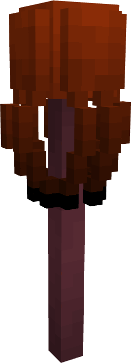

The Nameless Staff
The Nameless Staff is a powerful weapon that is exclusively dropped by the Nameless Depth when defeated.
Information on the Nameless Staff may contain spoilers for the Nameless Depth boss fight. If you want to avoid spoilers, check out the information after defeating the boss. If you've already defeated the boss, or you don't care and just wanna see the details of the staff item, press the button below:

Use
The Nameless Staff is a weapon that can be used on all living creatures. It is a 3D staff that can be used to shoot out a projectile in the form of the Nameless Depth, dealing damage and leaving behind an area of effect cloud that will cause harm to players and other living creatures. After the player uses the staff, they have a 10 second cooldown before they can use it again. If the player attempts to use the staff while it's cooldown is still in effect, they will receive a message alerting them that the staff is still in cooldown mode along with the amount of time left until the cooldown is complete.
Below lists the information of the projectile the Staff launches:
- Attack Type: Projectile
- Stops at: Mobs and Blocks
- Attack damage:
- Players: 4 HP (2 Hearts) (True Damage)
- True Damage: Damage that ignores the protection given by armor and potion effects.
- Non-player mobs: 15 HP (7.5 Hearts)
- Players: 4 HP (2 Hearts) (True Damage)
- Attack Debuffs:
- Blindness (3 seconds)
- Slowness II (4 seconds)
- Projectile top distance: 64 blocks
- Projectile speed: 10 blocks per second
Additionally, the player who uses the Nameless Staff (the caster) is immune to the Staff's projectile for about 5.5 seconds to prevent accidentally damaging themselves with the staff. Also, when the staff hits a mob or player, the projectile will not dissipate immediately, it will still live for about 0.25 seconds.
Below shows the stats for the Ink Cloud that the projectile leaves behind when colliding with a block, mob, player, or when it reaches it's top distance and dissipates:
- Attack Type: Lingering Area of Effect
- Attack Duration: 8 seconds
- Area of Effect Radius: 4 blocks
- Debuffs to players/mobs:
- Blindness (4 seconds)
- Wither I (6 seconds)
- Weakness I (4 seconds)
Please note that the debuffs the Ink Cloud applies to the player/mobs will be applied every second that the player/mob is within the radius of the Ink Cloud, so it is best that you try and leave the cloud in order to escape the constant debuffs.
Additionally, if the caster of the projectile for the Nameless Staff is within a 5 block radius AND if they are within the 5.5 second duration of immunity to the projectile talked about earlier, the caster will receive immunity to the cloud's effects for 3 seconds, to allow them to move out of the way quickly. This is given so the caster isn't punished for using the staff so close either on accident or if they are in close combat.
Obtaining The Nameless Staff
The Nameless Staff can only be obtained by defeating the Nameless Depth. The boss is guaranteed to drop at least 1 staff, however it can drop an extra staff per player that was present when the boss was summoned, up to a maximum of 4 staffs.
History
Development History
| Datapack Version | Addition/Change |
|---|---|
| 1.0.0 (Initial release) | Added the Nameless Staff as an item drop for the Nameless Depth boss |